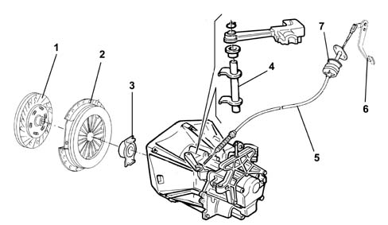
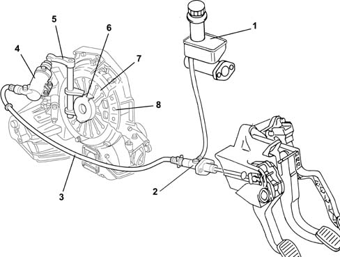

Introduction - CLUTCH
- Path
- Descriptions > 18 CLUTCH UNIT > Introduction - CLUTCH
- Kind
- system description
- Applies to
- engines: 1.2 8v, 1.9 DIESEL; all production periods
- Interactive page
- https://sloeber94.github.io/elrnDB-fDbl/en/#/2585401
Applies to: engines: 1.2 8v; all production periods
The clutch is the dry, single plate type with a thrust bearing always in contact with the flexible coupling spring.
The driven disc is driven by the pressure exerted by a diaphram spring. Clutch release is achieved through a flexible cable operated mechanically by the pedal via a damper.

1, Driven disc
2, Flexible coupling
3, Thrust bearing
4, Release mechanism
5, Flexible cable
6, Control pedal
7, Damper
Applies to: engines: 1.9 DIESEL; all production periods
The clutch is the dry, single plate type with a thrust bearing always in contact with the flexible coupling spring.
The driven disc is driven by the pressure exerted by a diaphram spring. The clutch is released by a pedal-operated hydraulic system.
The system consists of:
- a reservoir (1) common to the brake and clutch systems,
- a clutch pump (master cylinder) (2), which has the task of compressing the fluid and is fixed to the pedals;
- a connecting pipe (3) between the pump and the clutch operating cylinder;
- a clutch operating cylinder (4) fixed to the gearbox;
- linkage (5) operating the thrust bearing;
- a thrust bearing (6);
- a clutch drip tray with diaphragm springs (7);
- a clutch plate (8);

1, Brake/clutch fluid reservoir
2, Clutch pump
3, Connecting pipe between pump and cylinder
4, Clutch operating cylinder
5, Linkage
6, Thrust bearing
7, Diaphragm spring
8, Clutch plate
The pump (2), operated by the clutch pedal, pressurizes the hydraulic circuit and activates the clutch operating cylinder (4).
The latter acts on the operaating linkage (5), which 'pulls' the thrust bearing (3), overcoming the action of the pressure plate springs (7).
This action uncouples the clutch plate (8) from the flywheel.
When the pedal is released, the action of the diaphragm springs (7) returns the mechanism to the original position.